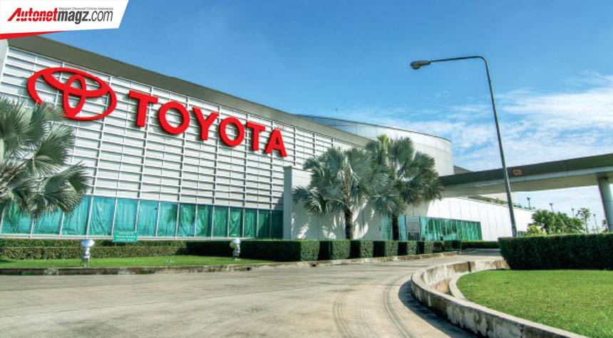
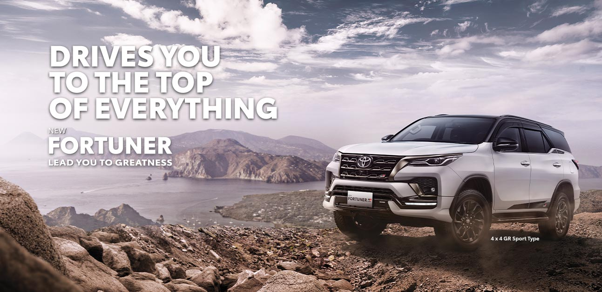
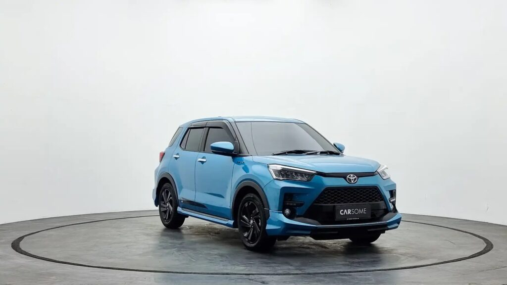
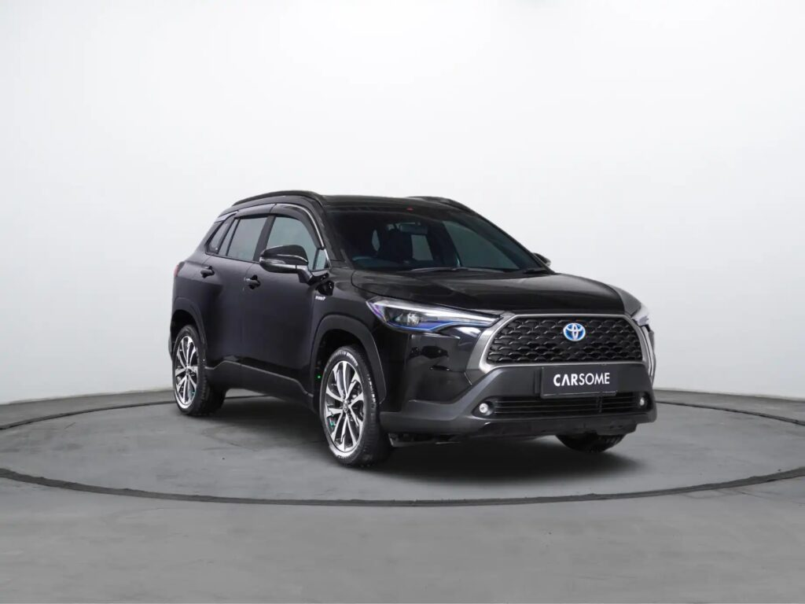
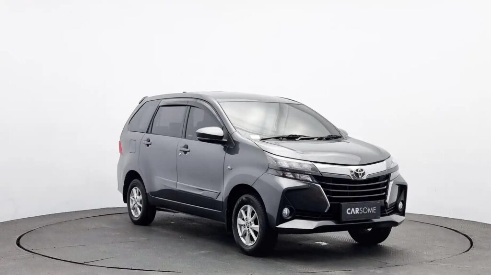
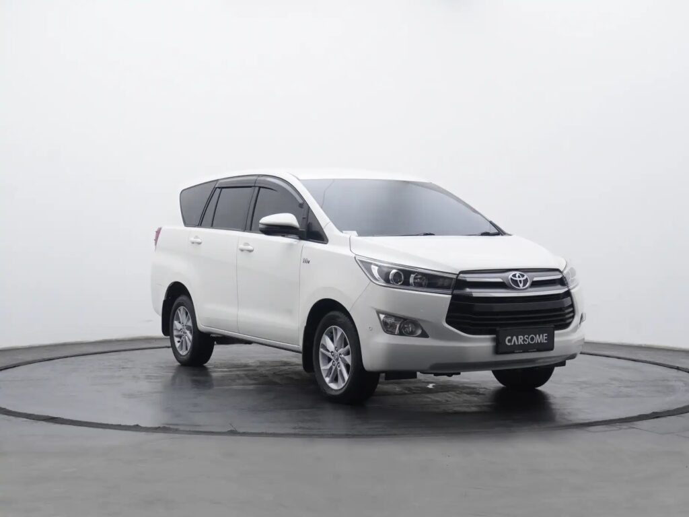
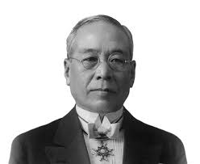
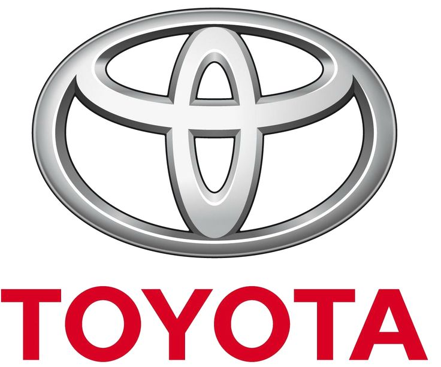

TOYOTA
Title description, Dec 7, 2017
Toyota adalah salah satu produsen mobil terbesar di dunia. Perusahaan yang bermarkas di Tokyo (Jepang) ini didirikan pada 28 Agustus 1937, 82 tahun lalu. Pendirinya adalah Kiichiro Toyoda, anak tertua dari Sakichi Toyoda sang pencetus industri Toyota yang semula membuat mesin jahit pada awal 1900-an.
Bagi orang Jepang, barangkali nama Sakichi Toyoda layak disejajarkan dengan Thomas Alva Edison. Ia tak hanya mampu mencerahkan industri Jepang, namun juga mempermudah kerja buruh-buruh tenun dengan mesin otomatis yang menambah kapasitas serta efisiensi produksi tekstil kala itu.
JENIS JENIS MOBIL TOYOTA
Title description, Sep 2, 2017

1. TOYOTA RUSH
Jenis mobil SUV ini selalu diperbaharui dari waktu ke waktu, Rush terkenal dengan desainnya yang kokoh, elegan dan gagah. Dari sisi mesin mobil Rush cukup bertenaga karena dibekali dengan mesin 1.4966 cc bertransmisi otomatis dan manual. Tenaga yang dihasilkan sebesar 104 Ps untuk 6000 Rpm dengan torsi 139 Nm. Untuk 1 liter mobil ini dapat menghabiskan 16,4 km. Contohnya Toyota Rush S TRD Sportivo 1.5, dari segi fitur keselamatan sudah dilengkapi dengan sistem pengereman Anti-Lock Braking System (ABS) dengan Electronic Brakeforce Distribution (EBD) untuk stabilitas pengereman yang lebih baik. Dual SRS airbag untuk pengemudi dan penumpang depan. Fitur Vehicle Stability Control (VSC) untuk menjaga stabilitas mobil saat menghadapi situasi darurat dan Hill Start Assist (HSA) untuk mencegah mobil berguling saat memulai dari tanjakan curam.

2. FONTUNER
Toyota Fortuner sering dijadikan pilihan dalam masyarakat karena Fortuner dinilai sebagai kendaraan yang prestise dalam masyarakat. Selain itu Toyota juga memiliki suku cadang yang terbilang sangat mudah untuk didapatkan. Untuk dapur pacu sendiri, mobil ini memiliki performa yang kuat dan bertenaga. Salah satu pilihan dari Toyota Fortuner adalah jenis Toyota Fortuner G 2.4 ini, didukung oleh mesin diesel 2.4 liter dengan teknologi Common Rail Direct Injection (CRDI). Mesin ini memiliki tenaga maksimum sekitar 150 PS dan torsi sekitar 400 Nm, memberikan akselerasi yang lancar dan daya tahan yang baik. Toyota Fortuner G 2.4 dilengkapi dengan fitur keselamatan terkini untuk melindungi penumpangnya seperti, sistem pengereman Anti-Lock Braking System (ABS) dengan Electronic Brakeforce Distribution (EBD), Traction Control System untuk menjaga kestabilan saat melintasi medan yang licin dan berbatu, dan fitur pengereman darurat (Emergency Brake Signal).

3. TOYOTA RAIZE
Toyota Raize dipilih menjadi salah satu mobil Toyota yang dipilih oleh masyarakat karena mobil ini dapat dapat memuat hingga 5 penumpang. Harga yang ditawarkan juga terjangkau, selain itu penggunaan dari mesin mobil ini terbilang ekonomis. Untuk 1 liter mobil Toyota Raize ini dapat menempuh jarak hingga 20 km. Dimensi dari Toyota Raize sendiri tidak begitu besar dengan ukuran 4.030 mm x 1.710 mm x 1.625 mm. Untuk ground clearance dari mobil ini 185 mm. Sehingga Toyota Raize jika digunakan di daerah perkotaan tentu sangat nyaman. Anda tidak perlu ragu karena mobil ini terlihat sporty dan gagah untuk Anda.

4. TOYOTA CROLA CROSS
Toyota Corolla Cross adalah salah satu mobil SUV Toyota yang baru muncul sejak 2020 lalu. Hadir dengan varian 1,8 AT dan 1,8 Hybrid AT di Indonesia. Lahir dengan konsep Toyota New Global Architecture (TNGA), mobil ini memiliki eksterior yang atraktif dan sporty. Dimensi dari Toyota Corolla Cross ini 4.460 mm x 1.825 mm x 1.620 mm, diperkaya dengan interior mewah dan stylish. Mengedepankan tiga paduan warna merah maroon, hitam dan silver. Untuk kursi sendiri, mobil ini dibekali dengan bahan kulit, mewah, nyaman dan fleksibel. Fitur keamanan dari mobil ini dibekali dengan Anti Lock Braking System, ISOFIX dan Electronic Brake Distribution hingga Brake Assist. Agar mobil tetap stabil saat dikendarai, Anda dapat menggunakan vehicle stability control system.

5. TOYOTA AVANZA
Kehadiran Toyota Avanza semakin memperketat persaingan pasar MPV di Indonesia. Mobil Avanza ini juga dibekali dengan berbagai fitur keamanan yang canggih seperti rem ABS dan juga fitur entertainment. Memiliki kapasitas tangki bahan bakar sebanyak 45 liter, Toyota Avanza ini tergolong irit untuk digunakan dalam daerah perkotaan.

6. TOYOTA INOVA REBORN
Toyota Innova adalah MPV berkapasitas 7 kursi yang cocok mengangkut keluarga dan anggota keluarga. Mobil ini memiliki performa yang kuat juga dapat diandalkan dalam wilayah perkotaan hingga pedesaan. Jenis mobil MPV ini mengusung dua tipe mesin yaitu diesel 2.4 L dan bensin 2.0 L. Selain itu hal menarik dari mobil Kijang Innova adalah ketersediaan Cargo Net dan Luggage Tray yang membuat bagasi kabin belakang menjadi lebih luas pada seluruh varian mobil ini. Untuk 1 liternya mobil ini dapat menempuh 8-10 km. Dapur pacu dari Kijang Innova dapat mengeluarkan tenaga maksimal 183 Nm pada 4000 rpm. Untuk ukuran harga Toyota Kijang Innova baru cukup tinggi. Jadi, alternatif lain yang dapat Anda coba adalah mencari mobil bekas Toyota Innova. Anda bisa mendapatkan Toyota Innova V 2.0 bekas berkualitas di CARSOME dengan harga mulai dari Rp300 jutaan dan cicilan mulai dari Rp6 jutaan saja. Cek beragam pilihan Toyota Innova lainnya sesuai kebutuhan Anda di CARSOME sekarang.
THANK YOU FRIENDS
Mungkin Sekian Web Yang Saya Buat Mohon Maaf Bila Banyak Sekali Kesalahan Dari Web Yang Saya Buat Baik Itu Dari Penulisan, Spesifikasi Produk, Hingga Kelengkapan Unit TOYOTA,Dan Lalu Saya Ucapkan Banyak Sekalian Terimakasi Kepada Kalian Teman" Saya Sudah Berkenan Mengujungi Web Saya
About Me
 KIICHIRO TOYODAToyota adalah salah satu produsen mobil terbesar di dunia. Perusahaan yang bermarkas di Tokyo (Jepang) ini didirikan pada 28 Agustus 1937, 82 tahun lalu. Pendirinya adalah Kiichiro Toyoda, anak tertua dari Sakichi Toyoda sang pencetus industri Toyota yang semula membuat mesin jahit pada awal 1900-an.
Popular Post
Follow Me
IG : @nandanghndrwn
IG : @nanzstr27